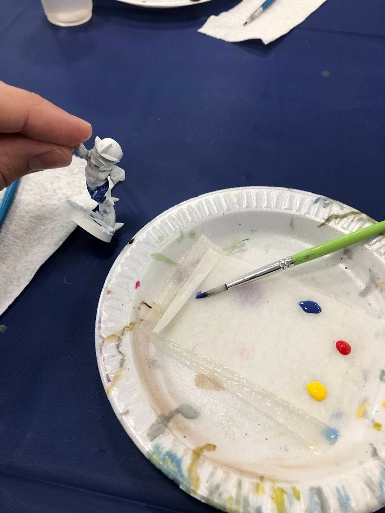

I didn't start with a hobby room. I started at a folding table at San Diego Comic-Con in 2023, with a paper plate for a palette, a handful of paint pots and a mini from a paint-and-take. That session is the whole reason this site exists, and it's also the best argument I know for keeping your first setup small.
Why this matters
The first mini isn't really a painting problem. It's a starting-friction problem. If getting set up feels like a project, you'll paint once and the brushes will dry out in a drawer. If sitting down takes two minutes, you'll paint again tomorrow, and the second mini is where you actually start learning.
The short version
You need two brushes, a small handful of paints, primer, a cup of water, some paper towel and decent light. That's it. Racks, airbrushes, premium brushes and a dedicated desk can all wait until a specific problem tells you to buy them.
The minimum kit, and what each piece solves
- Two brushes. One medium brush with a good point for blocking in colors, one small one for eyes and edges. A cheap multipack is fine to start; you'll learn what you like by ruining a few.
- A handful of paints. Whatever covers your mini's main colors, plus black, white, a metallic if it has armor or weapons, and a wash. A starter set usually does this in one box.
- Primer. Paint sticks to primer much better than to bare plastic. A hardware-store rattlecan works (see batch priming).
- Water and paper towel. Two cups is nice (one for rinsing, one clean), but one works. The towel is for wiping excess paint off the brush before it touches the mini.
- Decent light. A daylight-ish desk lamp or a window. Warm, dim light makes colors look muddy and hides mistakes.
- Something to hold the mini. A painting handle is great. So is anything you can stick the base to with a bit of putty. A lot of my early minis were painted on top of an old pill bottle.

My own first home kit after SDCC was exactly this small: a cheap set of brushes, a Vallejo starter set and a pill bottle for a handle.
What the first session should actually be
Give the first mini a modest goal and a time box. I'd treat it as an under-an-hour project, not a masterpiece:
- Block in the big color zones. Skin, costume, hair, base. Don't worry about edges yet.
- Thin your paint. A little water so it flows. Two thin coats beat one thick one that fills in the detail.
- Add a wash where it helps. Brown or black wash in the recesses does a lot of shading for you.
- Clean up the biggest mistakes. Go back over the worst edges with the base color.
- Stop. Seriously. Stop before it turns into a three-hour perfection spiral.

What can wait
- An airbrush. Amazing later, overkill now.
- A wet palette. Useful once you're doing layers and blends. A plate or a lid works on day one.
- Premium brushes. Kolinsky sable brushes are worth it once you know what you're doing, but they're not a starter buy.
- Fifty paints. Buy colors when a mini asks for them. The next 10 paints guide covers what's actually worth adding.
The real goal
The best starter kit is the one that makes it easy to sit down and paint again tomorrow. Keep it out where you can see it instead of packed in a box, and let the second mini be a little better than the first.
Checklist
- Two brushes (a medium with a point, a small detail brush)
- Base colors for your mini, plus black, white, one metallic and one wash
- Primer
- Water cup and paper towel
- Daylight lamp or a window
- Something to hold the mini
- A one-hour time box
Next: once you've finished one, give your first 10 minis a plan.